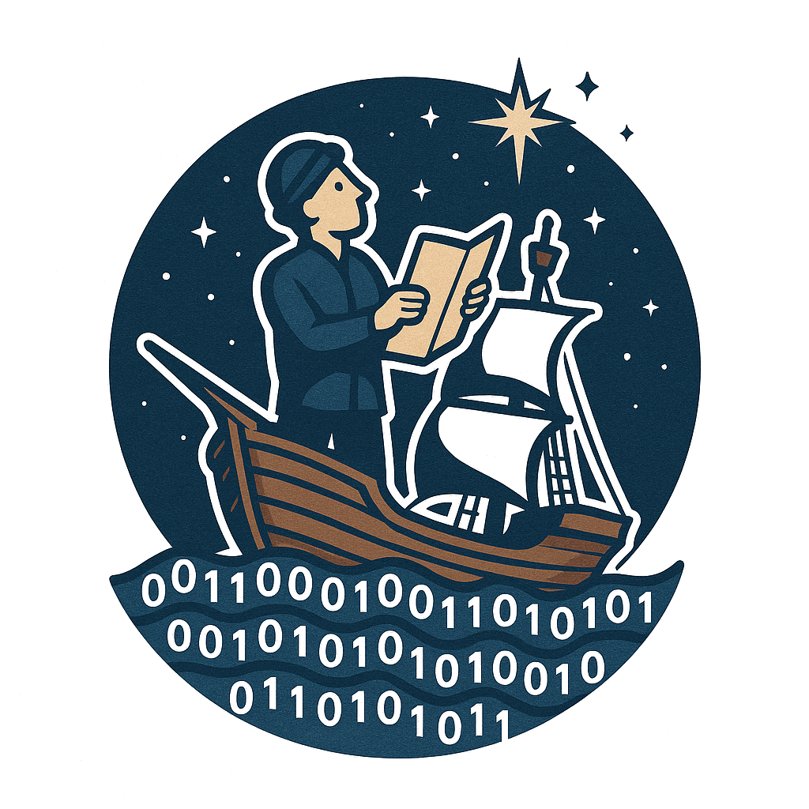

Welcome to the Healthcare Services Analytics & Decision Science Atlas.
This is a directory of open-source tools, packages, and projects for analytics and decision science in healthcare.
This site is in its very early stages - please check back as we continue to develop it.
In time, we hope this can develop into a tool to help showcase the amazing work happening across the analytics and data science communities in healthcare, promoting reuse and collaborative work on the tools we all need.
Click on the links below, or use the menu bar to navigate.

and Tools
Contributions
Contributions are very welcome!
You don’t need to be able to write code or use Quarto to add to the Atlas - there are lots of ways to submit content.
Please see our contributors page for instructions on how to get involved.
Interested to see what things we propose should be added to the Atlas?
Click on the cards in the right hand column above to see the full list of proposed entries for each type of content.
Please note that inclusion of a tool on this site does not imply that the HSMA team, NIHR, or any other Atlas contributors, have reviewed these tools in detail. This resource is designed to act as a signpost to the work that is out there, and provide a high-level indication of the health of any given project, but you should always conduct your own reviews of the suitability of any of these tools and techniques for your own use case.
Inclusion of a tool on this page also does not indicate endorsement of the tool author of the HSMA programme, NIHR, the Atlas, or the description written of the tool.
If you have any concerns, or would like any content to be removed, please raise an issue on the repository.
Most Recently Added or Updated Projects, Packages and Tools

The Discrete Event Simulation (DES) playground is an interactive web application designed to teach the fundamental concepts of DES to absolute beginners. Used to support a range of training sessions, it can also be used as a standalone tool to introduce yourself to why DES is useful, building up from a very simple to a more complex model and allowing you to explore the impact of changing a range of parameters. DES is used for building simulations of pathways and services, allowing 'what-if' questions to be tested.

An NHS England R script that uses characteristics like size, demographics, deprivation, and ethnicity to calculate lists of ten statistically similar CCGs.

DES of opthalmology pathways, allowing the exploration of the impact of different anti-VEGF treatment strategies on patients and costs.

DES modelling flow of children and young people through an ADHD diagnostic pathway, with streamlit web app.

Python tool to assist Integrated Care Boards (ICBs) to perform need based allocation based on defined place. A 'place' is defined within an ICB as a cluster of GP practices. Relative need indices are then calculated and output as a csv.

Discrete Event Simulation in RSimmer of Ambulance Job Cycle Times.
Click here to view all projects, packages and tools.